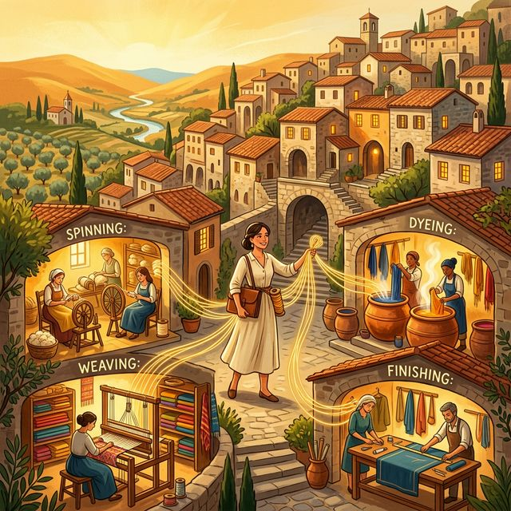

The Italian Textile Clusters: A Case Study in Flexible Specialization
Decades ago, a question began puzzling business economists: why was Italy, a country of small firms and fragmented production, consistently beating large, vertically integrated industrial competitors in the global luxury goods market?
The answer, documented extensively in the 1980s and 1990s by researchers like Giacomo Becattini, Sebastiano Brusco, and Michael Piore, goes by the name “Flexible Specialization” or the “Italian Industrial District” model. It describes a mode of production that is, structurally, the opposite of the Fordist factory — and yet, in the right conditions, its equal in output and far superior in product quality.
Understanding how this system works, when it flourishes, and when it breaks down offers one of the most instructive real-world examples available in the study of thin markets.
1. The Clusters: Geography as Competitive Advantage
Production in northern Italy is concentrated in distinct regional clusters, each with a deep, generations-long hyper-specialization:
- Como (Silk & Luxury Textiles): Located just north of Milan, Como is the historic epicenter of the global silk industry. If a Parisian haute couture house wants a gold lamé for a runway gown, Como is where that fabric was conceived, dyed, and woven — likely by a firm whose founder’s grandfather worked the same type of loom.
- Biella (Fine Wool): In the Piedmont region west of Milan, Biella is the world’s premier center for the finest worsted wools and cashmere, home to names like Loro Piana and Zegna.
- Prato (Wool & Recycled Textiles): Near Florence, Prato is a massive and historically innovative district specializing in carded wool and, notably, in the sophisticated recycling of textile waste into high-quality new fabric.
2. Extreme Specialization: The Atomized Value Chain
The defining feature of these districts is not simply that firms are small — it is that they are vertiginously specialized. A single firm rarely produces a piece of finished fabric. Instead, the production chain is disaggregated:
- Firm A specializes only in twisting silk yarn to a specific denier.
- Firm B specializes only in dyeing that yarn using decades-old recipes to achieve a specific vibrancy and fastness.
- Firm C specializes only in weaving complex jacquard patterns with metallic threads on machinery that no one else has maintained with the same care.
- Firm D specializes only in mechanical finishing — a calendering or brushing process that gives the fabric its final, specific drape and “hand.”
Many of these firms have fewer than 20 employees. They are competitive against companies forty times their size not despite this narrowness, but because of it. Deep specialization, compounded over generations, produces a quality ceiling that generalist manufacturers cannot reach at any scale.
3. The Orchestrator: The Textile Broker
Without a central coordinator, a fragmented network of micro-enterprises would be logistically chaotic. This coordination role is filled by a specialized intermediary known by different titles depending on the district:
- The Converter or Setaiolo — in Como, for silk.
- The Impannatore — in Prato, for wool.
The broker is the human interface between the global demand side (a couture designer in Paris with a concept and a budget) and the supply side (a cluster of hundreds of individual artisan firms, none of whom the designer will ever meet).
The broker’s function is sophisticated and genuinely value-creating. They finance the purchase of raw materials. They hold in their head — or increasingly in their contacts and experience — a detailed map of the entire cluster: who is currently doing the best work, which loom is suited for a specific tension, which dyer’s methods will hold color under a Paris runway’s lights. They assemble a purpose-built, temporary supply chain for a single order, manage the handoffs between firms, assume the quality risk, and deliver a finished bolt of fabric to the client.
In the post-war period through the late 1980s, this ecosystem was, by most accounts, remarkably equitable. Researchers like Becattini documented high wages for skilled workers, genuine upward mobility (an experienced employee could, and regularly did, establish their own small firm), strong mutual credit institutions, and active industry associations that provided shared services. The industrial district was not just an efficient production system — it was a functioning social economy.
4. When the System Was Stressed: Globalization and the Squeeze
The picture changed substantially through the 1990s and 2000s as globalization reordered the competitive landscape. Fast fashion collapsed the time available for production, drove down per-unit budgets, and created intense pressure on the entire supply chain.
This pressure concentrated at the point of least resistance: the small subcontractors. Because the impannatore held the client relationship, they also held the ability to route work elsewhere — to Turkish mills, Chinese factories, or to other firms within the same cluster. When margins were squeezed by global competition, the brokers passed the pressure downward rather than absorbing it themselves.
The result, in some districts and for some categories of work, was a documented erosion of the system’s earlier equity:
Margin Compression
Brokers who once negotiated as genuine partners increasingly operated as price-setters. Because subcontractors lacked direct market access, they had no alternative but to accept the rates offered or lose the work. The artisan’s functional gains from their deep specialization were increasingly captured by the broker rather than retained.
The Prato Labor Scandal — A Complicated Story
The most serious documented consequences occurred in Prato, though the causal chain is more layered than it is sometimes depicted. Beginning in the 1990s, work in Prato was increasingly routed to Chinese-owned subcontracting operations that had established themselves in the district. These firms — operating below Italian cost floors — enabled the continuation of “Made in Italy” labeling at price points that Italian-cost production could no longer achieve.
The exploitation was severe and well-documented: 14 to 16-hour shifts, compensation far below the legal minimum, unsafe and unsanitary working environments. A fire in 2013 killed seven workers living in a factory space.
The impannatore benefited from this arrangement by receiving lower quotes and not examining too closely how they were achieved — a form of willful ignorance that constitutes complicity rather than direct predation. This distinction matters analytically: the brokers were not directly operating sweatshops; they were creating conditions where sweatshops could be used as a cost vehicle. The ethical verdict may be similar, but the mechanism is different, and any structural remedy needs to address the actual mechanism.
Innovation Under Pressure
The claim that power asymmetry universally stifles innovation requires qualification. Como’s silk district, for example, has remained a genuine global innovation leader through this period — in printing technology, sustainable dyeing, and smart textile development — despite facing the same competitive pressures. The relationship between broker dominance and innovation suppression is real in some contexts, but it is not universal. Innovation appears to persist where the district maintains strong collective institutions (trade associations, technical schools, shared R&D facilities) that provide a floor of capability independent of any individual broker relationship.
5. The Structural Lesson: Information Asymmetry as Leverage
The fundamental mechanism underlying all of the above — the equity of the good years and the pathology of the difficult years — is the same: the broker’s monopoly on two scarce assets.
- The client relationship: The artisan firms do not know who their final customer is. The broker is their only market.
- Market information: The artisan firms do not know what comparable capacity elsewhere is being offered at, what the client is willing to pay, or what the margins are at each step in the chain.
When the system was embedded in a dense social fabric with strong norms of reciprocity and long-term relationships, this information asymmetry was managed as a collective institution — essentially a social contract. When competitive pressure dissolves that social contract, the asymmetry becomes pure leverage, and leverage will be exercised.
This is, in the vocabulary of thin market theory, a predictable failure mode for any market whose coordination function is concentrated in a single class of intermediary not subject to competitive discipline.
6. What the Italian Model Suggests — and Where It Points
The most important thing the Italian industrial district demonstrates is simply that such a system is possible. It is not a theoretical construct. It existed. In some of its best-functioning forms, it produced world-leading output, fair wages, upward mobility, and genuine artisan mastery — sustained across multiple generations.
The case is worth studying not because we should try to replicate a second Como elsewhere, but because it establishes a proof of concept: a fragmented ecosystem of specialized micro-enterprises, properly coordinated, can outcompete vertically integrated industrial manufacturers on quality and responsiveness, at any scale that matters.
The failure modes of the Italian model — broker capture, rent extraction, the erosion of social contract under competitive stress — came about because the coordination function was entirely embedded in individual human brokers whose information advantage was uncontested. There was no transparency, no price discovery available to the artisans, no institutional counterweight once social norms were dissolved by global cost pressure.
A reasonable question follows: in places where the artisan base already exists but the coordinating infrastructure does not, could the ecosystem emerge faster and more equitably if the coordination function were built differently from the start?
A Family of Weavers in Oaxaca
Consider a scene from Oaxaca, Mexico. A 98-year-old patriarch, a master weaver, sits in a chair while his sons each work their own production space. Each son operates independently, on old wooden looms, producing linens of extraordinary complexity — intricate traditional designs in natural dyes, textiles of genuine beauty and cultural depth. These are not factory outputs. They are the product of a lifetime of inherited technique.
This is a micro-enterprise operation. It has no broker. It has no systematic market access beyond the walk-in tourism of Oaxaca’s streets and a handful of direct relationships with buyers who happened to find them. Each son is, in effect, a single-operator version of a Como artisan firm — deeply specialized, embedded in a craft tradition, with no path to the global market that would value their work at its actual worth.
Now consider what would be required to connect that family — and a dozen others like them across the Oaxacan weaving tradition — to a designer in New York or a boutique hotel group in Mexico City looking for handmade textiles of exactly this character. The demand exists. The supply exists. The gap is coordination: discovery, trust, quality verification, logistics, and a brokering function that neither party can currently perform on their own.
This is the thin market the Italian model addressed through the human impannatore. The analogy is direct.
The Role for an AI-Mediated Brokering System
An AI-mediated platform — something like what MarketForge is designed to explore — is not conceived as a replacement for an existing Italian-style system. Italy built its system over generations and is navigating its own path forward. The more tractable and more interesting question is whether, in contexts like Oaxaca, such a system could be seeded by providing the coordination infrastructure before the artisan ecosystem has had to grope its way there organically.
The Italian impannatore emerged because someone discovered that assembling fragmented specialized capacity was valuable and that knowing every firm in the district was a sustainable competitive advantage. That discovery process took decades. An AI-mediated brokering system could make that discovery function far cheaper and faster — accessible to a micro-business operator, not just to an entrenched district insider.
Critically, if the governance is designed well from the outset — transparent pricing, reputation accessible to all participants, no single intermediary holding exclusive client relationships — the equity problems that plagued the Italian model under stress might be structurally mitigated rather than waiting to emerge only after competitive pressure dissolves the social contract.
These are design aspirations, not solved problems. MarketForge is an early-stage concept, and whether it can achieve this coordination at meaningful scale is an open empirical question. But the Italian textile districts are the best available evidence that the underlying model — extreme specialization, coordinated through a trusted broker function — is not utopian. It has worked. The question is whether it can be built better the second time.